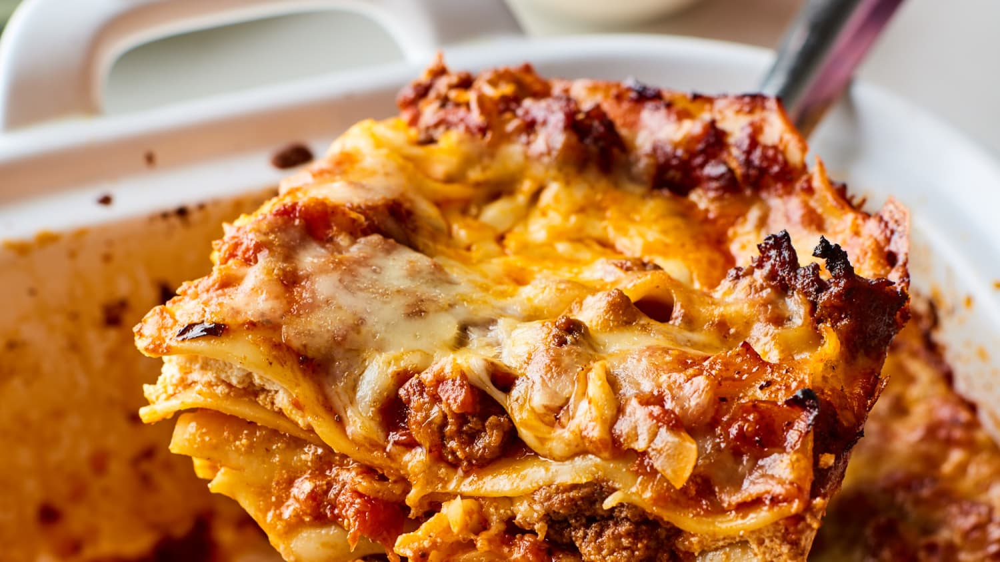

Lasagna

Description
Make our easy veggie lasagne using just a handful of ingredients. This classic Italian-style pasta bake is sure to become a family favourite
Ingredients
- 3 red peppers
- 2 aubergines
- 8 tbs olive olive
- 400g chopped tomatoes
- Bechamel
- 125g mozzarella
Method
- Heat the oven to 200C/180C fan/gas 6. Lightly oil two large baking trays and add the peppers and aubergines. Toss with the olive oil, season well, then roast for 25 mins until lightly browned.
- Reduce the oven to 180C/160C fan/gas 4. Lightly oil a 30 x 20cm ovenproof dish. Arrange a layer of the vegetables on the bottom, then pour over a third of the tomato sauce. Top with a layer of lasagne sheets, then drizzle over a quarter of the white sauce. Repeat until you have three layers of pasta.
- Spoon the remaining white sauce over the pasta, making sure the whole surface is covered. Scatter over the mozzarella and cherry tomatoes. Bake for 45 mins until bubbling and golden.